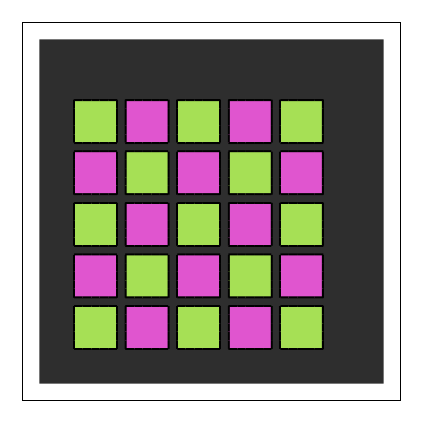
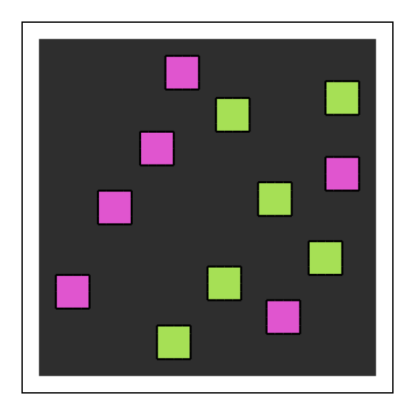
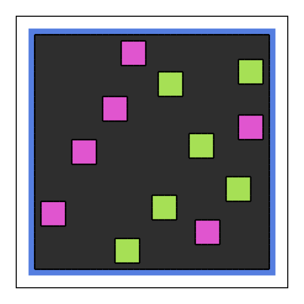
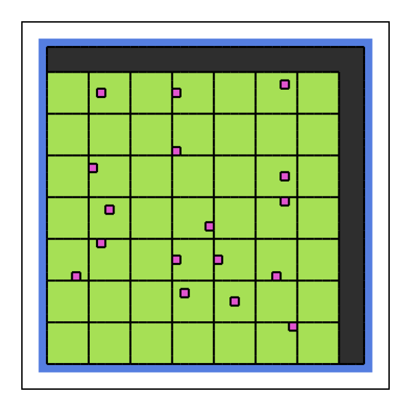
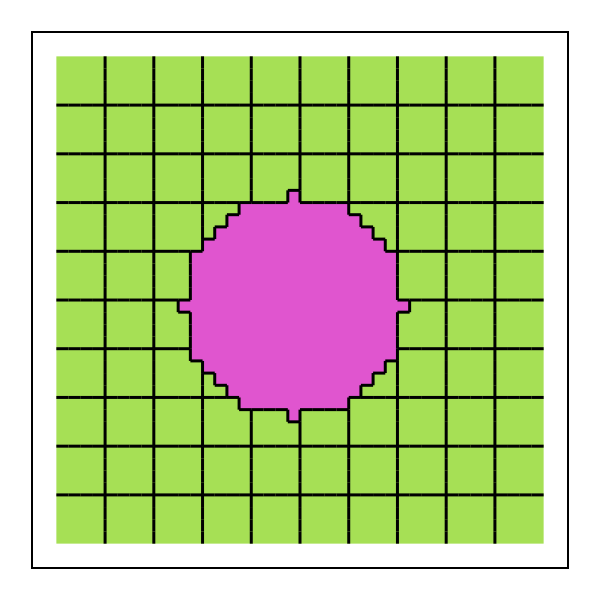

Tutorial 4: building initial states with layouts
Every simulation starts from an initial state: which cell owns each site, and the kind of each cell. A layout describes that state as a stack of simple layers. You will learn:
- the built-in layers
Tiling,Scattered,FrameandInsertUntil; - how
overlaystacks layers and howlayoutturns them into an operating point; - how to check what each layer did with
report = true; - how to write your own layer.
using Potts, PottsModels, MakiePotts, CairoMakieA model to lay out
The layers name kinds, so we need a model. This one has a frozen wall kind: cells of a kind marked [frozen] never move, which makes walls and obstacles.
@potts_model Tissue begin
@kinds medium wall[frozen] dark light
@parameters J[kind, kind] = [0 0 16 16; 0 0 20 20; 16 20 2 11; 16 20 11 14]
@lattice Lattice((40, 40); boundary = Closed(), neighborhood = Moore(1))
@energy begin
Volume(dark, light; target = 25.0, strength = 1.0)
Adhesion(J)
end
@sweep Metropolis(; temperature = 10.0)
end
@named tissue = Tissue()
# draw the state of an operating point (a problem with zero length holds it)
function show_layout(op; title = "")
fig = Figure(size = (300, 300))
ax = Axis(fig[1, 1]; title, aspect = DataAspect())
hidedecorations!(ax)
pottsplot!(ax, renderframe(PottsProblem(tissue, op, (0, 0)).u0); boundaries = true)
return fig
endTiling
Tiling(size; spacing, region, kinds) fills a region with boxes of size, spacing sites apart. The kinds are used in turn, box by box, in column-major order (down the first axis first):
tiles = Tiling((5, 5); spacing = 1, region = (5:36, 5:36), kinds = [:dark, :light])
op = layout(tiles, tissue)
show_layout(op)
layout(l, sys) paints the layers on the model's lattice and returns the operating point [ownership => σ, kind => kinds]. region is a tuple of ranges, one per axis; it defaults to the whole lattice. A box that does not fit in the region is skipped; partial = :clip keeps its part inside instead.
Scattered
Scattered(n, size; region, kinds, seed, gap) places n boxes at random, at least gap medium sites apart. The same seed gives the same placement:
seeds = Scattered(12, (4, 4); region = (3:38, 3:38), kinds = [:dark, :light], seed = 1, gap = 2)
show_layout(layout(seeds, tissue))
remake changes a keyword of a layer, for example another draw: remake(seeds; seed = 2). When the boxes cannot fit, Scattered throws an error that says so.
Frame and overlay
Frame(kind; width = 1) is one cell that owns every site within width of the closed edges of the lattice. overlay(layers...) paints layers in order; later layers overwrite earlier ones:
op = layout(overlay(Frame(:wall), seeds), tissue)
show_layout(op)
With a frozen wall kind the frame is a box the cells cannot leave or push. Whether cells spread along it depends on the contact energies. Each unit of boundary a cell lays against the wall turns wall–medium contact into wall–cell contact and saves the same length of cell–medium contact, so it pays $J(\text{cell}, \text{wall}) - J(\text{medium}, \text{wall}) - J(\text{cell}, \text{medium})$. The cell stays off the wall when this is positive, $J(\text{cell}, \text{wall}) > J(\text{medium}, \text{wall}) + J(\text{cell}, \text{medium})$. Here $J(\text{medium}, \text{wall}) = 0$ and $J(\text{cell}, \text{wall}) = 20 > 0 + 16$, so the wall is not wetted.
InsertUntil
InsertUntil(kind; into, number | fraction, seed) turns random single sites of existing cells into new one-site cells of kind, until it has made number of them or the new kind is a fraction of all cells. Here a quarter of the cells of a dark tiling become light seeds, which grow to their target area once the simulation starts:
start = overlay(Frame(:wall),
Tiling((5, 5); region = (2:39, 2:39), kinds = [:dark]),
InsertUntil(:light; into = [:dark], fraction = 1 // 4, seed = 3))
op, report = layout(start, tissue; report = true)
show_layout(op)
An inserted site cuts a hole in the cell it lands in, and can split it into pieces; layout warns when a cell ends up in pieces. splits = :allow on a layer accepts it.
The layout report
With report = true, layout also returns one row per layer: how many cells the layer was asked for, how many it painted, how many were later painted over completely (dropped), and, for InsertUntil, the draws that missed:
foreach(println, report)(layer = 1, type = :Frame, requested = 1, painted = 1, dropped = 0, misses = 0, counted = 1, splits = 0)
(layer = 2, type = :Tiling, requested = 49, painted = 49, dropped = 0, misses = 0, counted = 49, splits = 0)
(layer = 3, type = :InsertUntil, requested = 17, painted = 17, dropped = 0, misses = 3, counted = 17, splits = 0)Running from a layout
The operating point goes to PottsProblem like any other. The tiled tissue sorts inside its frozen frame:
op = layout(overlay(Frame(:wall), Tiling((5, 5); region = (5:36, 5:36), kinds = [:dark, :light])), tissue)
prob = PottsProblem(tissue, op, (0, 1500); seed = 1)
sol = solve(prob, SequentialCPM(); saveat = 25)
record_potts("layouts_frame.mp4", sol; framerate = 12, title = "", plot = (; boundaries = true), figure = (; size = (420, 420)))The operating point can also set other initial values: append pairs such as :c => c0 (a field) or :V₀ => 30.0 (a parameter) to it.
Writing the arrays yourself
A layout is a convenience. Any integer matrix of cell numbers works, with one kind per cell number:
σ = zeros(Int32, 40, 40)
σ[2:39, 1] .= 1; σ[2:39, 40] .= 1 # cell 1: two walls (one cell can have several pieces)
σ[10:15, 10:15] .= 2 # cell 2
σ[25:30, 20:25] .= 3 # cell 3
show_layout([ownership => σ, kind => [:wall, :dark, :light]])![Example block output]()
Your own layer
A new layer is a type and one method, Potts.paint!(op, layer, lattice). Inside it, Potts.new_cell!(op, kind) makes a cell and returns its number, Potts.assign!(op, x, id) paints a site or a box of sites, and Potts.record! fills the layer's report row. This layer paints a disk of one kind:
struct Disk <: AbstractLayout
center::Tuple{Int, Int}
radius::Float64
kind::Symbol
end
function Potts.paint!(op::Potts.LayoutState, d::Disk, lat)
id = Potts.new_cell!(op, d.kind)
for x in CartesianIndices(size(lat))
sum(abs2, Tuple(x) .- d.center) <= d.radius^2 && Potts.assign!(op, Tuple(x), id)
end
Potts.record!(op; requested = 1, painted = 1)
return nothing
end
show_layout(layout(overlay(Tiling((4, 4); kinds = [:dark]), Disk((20, 20), 9.0, :light)), tissue))
The disk overwrites the tiles under it, and tiles left without a site are dropped. Other queries are Potts.owner(op, x), Potts.kindof(op, id) and Potts.ncells(op) for the paint so far, and Potts.isperiodic(lat, d) and Potts.indomain(lat, x) for the lattice; see Layouts.
The initial slab of the Akeeb et al. invasion model is written with the same public layers, a clipped Tiling of followers and an InsertUntil of leaders: akeeb_layout(; lattice = (500, 300)).
What you learned
Tiling,Scattered,FrameandInsertUntilare layers;overlaystacks them.layout(l, sys)gives the operating point;report = trueexplains what each layer did.- A custom layer is a struct and a
Potts.paint!method.
See also: AkeebInvasion for the layout of a published model.
Next, Tutorial 5 puts ODEs inside cells.